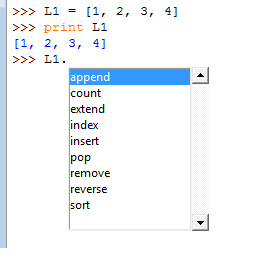

Esta obra esta protegida bajo una licencia de creative commons
Universidad de Panamá
2018
En Python las listas son uno de los tipos de básicos de variables u objetos. Para generar una lista basta hacer una asignación a un nombre de variable con los elementos dentro de corchetes cuadrados [ ]. Veamos un ejemplo en el intérprete de Python (Python shell) :
>>> L1 = [1, 2, 3, 4]
>>> type(L1)
<type 'list'>
>>> print L1
[1, 2, 3, 4]
>>>
Se asigna al nombre L1 una lista con los datos 1, 2, 3, y 4. En Python este tipo de variable se denomina list y se puede llamar como una variable simplemente.
Para acceder a cualquiera de los datos de la lista se usa un índice de números enteros después del nombre de la variable y entre corchetes cuadrados:
>>> L1[0]
1
>>> L1[1]
2
>>> L1[2]
3
>>> L1[3]
4
> L1[4]
Traceback (most recent call last):
File "<pyshell#7>", line 1
L1[4]
IndexError: list index out of range
Observe que el 1 quedó guardado en el índice 0 de la variable L1, mientras que el 4 en el índice 3 de la variable L1. Si llamamos una posición con un índice sin valores, Python retorna un mensaje de error informando que se ha salido del rango del índice (list index out of range).
Otra forma de denominar los índices en Python es usando valores negativos como se muestra a continuación:
>>> L1[-1]
4
>>> L1[-2]
3
>>> L1[-3]
2
>>> L1[-4]
1
>>>
Aquí se asigna al último dato de la lista el índice -1 y al primer dato el índice -4. Es posible usar cualquiera de las dos formas de índice, el lenguaje tiene la capacidad de usarlos indiscriminadamente, pero se debe tener especial atención en no confundirlos.
Las listas en Python pueden contener cualquier tipo de datos y no necesariamente tienen que ser del mismo tipo, por ejemplo:
>>> L2 = [5, 1.2, True, 'caja']
>>> type(L2[0])
<type 'int'>
>>> type(L2[1])
<type 'float'>
>>> type(L2[2])
<type 'bool'>
>>> type(L2[3])
<type 'str'>
>>>
La lista L2 contiene en el índice 0 un dato tipo entero, en el índice 1 un dato tipo real, en el índice 2 un dato tipo lógico y en el índice 3 un dato tipo alfabético. Los cuatro elementos que contiene la lista son de diferente tipo, no existe ningún tipo de restricción en cuanto a la homogeneidad de los elementos.
Las listas pueden contener como elementos otras listas, generando así de manera natural listas multidimensionales, ya que los datos pueden ser llamados con índices de más dimensión. Veamos el siguiente ejemplo:
>>>L3 = [L1, L2]
>>> print L3
[[1, 2, 3, 4], [5, 1.2, True, 'caja']]
>>> L3[0]
[1, 2, 3, 4]
>>> L3[0][3]
4
>>> L3[1]
[5, 1.2, True, 'caja']
>>> L3[1][1]
1.2
>>>
La variable L3 contiene dos listas y podemos acceder a cualquiera de los elementos usando dos índices como al escribir L3[0][3], el programa interpreta como un llamado a la lista L3 su posición 0 y dentro de este elemento su posición 3, respondiendo con el valor 4 que estaba guardado. Esta propiedad no tiene límite y se pueden apilar así listas dentro de listas creando arreglos multidimensionales.
Las listas como objetos que son en Python, disponen de sus métodos propios que se muestran en la siguiente imagen Métodos de listas:

Para listar estos métodos en el interface de Python, se escribe el nombre de la variable seguida de un punto “.” y aparece un menú de los métodos.
Para usar estos métodos se escribe la variable seguida de un punto y el nombre del método con los argumentos necesarios. Veamos los siguientes ejemplos con algunos de los métodos:
>>> L1.append(-2)
>>> print L1
[1, 2, 3, 4, -2]
>>> L1.append(3)
>>> print L1
[1, 2, 3, 4, -2, 3]
>>>
El método append adiciona un elemento a la lista colocándolo en la posición superior del índice. Aquí primero se adicionó -2 y luego 3.
>>> L1.count(3)
2
>>>
El método count cuenta cuantos elementos de la variable L1 son iguales al argumento. En este caso encuentra que dos elementos de L1 son iguales a 3.
>>> L1.extend(L1)
>>> print L1
[1, 2, 3, 4, -2, 3, 1, 2, 3, 4, -2, 3]
>>>
El método extend amplía la lista L1 con otra lista, adicionando directamente los elementos.
>>> L1.index(3)
2
>>> L1.index(3,3)
5
>>> L1.index(3,6)
8
>>> L1.index(3,9)
11
>>> L1.index(3,12)
Traceback (most recent call last):
File "<pyshell#18>", line 1, in
L1.index(3,12)
ValueError: 3 is not in list
>>>
El método index encuentra el primer índice cuyo valor es igual al primer argumento e iniciando la búsqueda en el índice señalado por el segundo argumento. Aquí encuentra que en el índice 2 de la variable L1 está el valor 3, luego se encuentra que 3 está también en los índices 5, 8 y 11. Para encontrar estos índices se indicó un segundo argumento definiendo a partir de cuál índice se inicia la búsqueda.
>>>L1.insert(0,111)
>>> L1
[111, 1, 2, 3, 4, -2, -2, 1, 2, 3, 4, -2, -2]
>>> L1.insert(4,3333)
>>> L1
[111, 1, 2, 3, 3333, 4, -2, -2, 1, 2, 3, 4, -2, -2]
>>>
El método insert permite insertar en la posición definida por el primer argumento, un elemento cualquiera en la lista, definido por el segundo argumento. Aquí se inserta el elemento 111 en la posición del índice 0 y luego el elemento 3333 en la posición del índice 4.
>>>L1.sort()
>>> L1
[-2, -2, -2, -2, 1, 1, 2, 2, 3, 3, 4, 4, 111, 3333]
>>>
El método sort ordena los elementos de la lista según un criterio, en este ejemplo, el ordenamiento es de forma ascendente colocando en el primer índice el elemento menor y en el último índice el elemento mayor.
Adicional a los métodos de los objetos tipo lista, existen también funciones del Python que se pueden aplicar a estas listas, como por ejemplo:
>>> len(L1)
14
>>>
Esta función len() responde con el número de elementos que tiene la lista que se define en el argumento, en este caso, tenemos que L1 tiene 14 elementos.
Las listas también permiten hacer llamado a parte de sus elementos con solo definir parte de sus índices como se muestra en este ejemplo:
>>> L1
[-2, -2, -2, -2, 1, 1, 2, 2, 3, 3, 4, 4, 111, 3333]
>>> L1[0:4]
[-2, -2, -2, -2]
>>> L1[4:6]
[1, 1]
>>> L1[4:7]
[1, 1, 2]
>>>L1[4:]
[1, 1, 2, 2, 3, 3, 4, 4, 111, 3333]
>>> L1[:-1]
[-2, -2, -2, -2, 1, 1, 2, 2, 3, 3, 4, 4, 111]
>>>
Aquí se muestra cómo llamar sólo parte de los elementos definiendo el índice inicial y final entre los dos puntos :. Si no definimos un valor después de los dos puntos, se asume el último índice (caso L1[4:]), y si no se define el valor antes de los dos puntos, se asume el primer índice (caso L1[:-1]).
Por último, es importante anotar que las listas son la base para la programación del ciclo for como por ejemplo este ciclo para sumar los valores de esta lista:
>>> L1 = [-2, -2, -2, -2, 1, 1, 2, 2, 3, 3, 4, 4, 111, 3333]
>>> Suma = 0
>>> for q in L1:
Suma = Suma + q
>>> print Suma
3456
>>> sum(L1)
3456
>>>
Aquí primero usamos L1 como el iterador principal del ciclo “for” para sumar todos sus elementos en la variable Suma, luego usamos una función propia de Python, sum() que realiza internamente la suma de los elementos de la lista.
Un último aspecto que debemos tener en cuenta con las listas es que podemos reemplazar cualquiera de sus elementos con solo reasignar en la posición de índice que deseemos, como en el ejemplo siguiente:
>>> L1
[-2, -2, -2, -2, 1, 1, 2, 2, 3, 3, 4, 4, 111, 3333]
>>> L1[0]=888
>>> L1
[888, -2, -2, -2, 1, 1, 2, 2, 3, 3, 4, 4, 111, 3333]
>>> L1[-1]= 0
>>> L1
[888, -2, -2, -2, 1, 1, 2, 2, 3, 3, 4, 4, 111, 0]
>>>
Se reemplaza el primero y último dato de la lista L1 por los valores 888 y 0 respectivamente.
Otras funciones del Python generan listas para ciertas aplicaciones, como por ejemplo:
>>> L4 = range(0, 8, 2)
>>> L4
[0, 2, 4, 6]
>>> L4 = range(0, 9, 2)
>>> L4
[0, 2, 4, 6, 8]
>>>
Esta función range() propia del Python genera listas de números enteros donde los argumentos son el valor inicial, el valor final y cada cuanto el incremento para generar un numero, respectivamente. En el ejemplo primero se genera la lista L4 con números empezando en 0 y terminando en 8, con incrementos de 2. El ejemplo siguiente cambia sólo el argumento de número final para aclarar que en la iteración se realiza hasta un valor menor que el argumento dado.
Existen aún muchas más funciones propias de Python que se pueden aplicar a las listas o se pueden programar. Más adelante iremos discutiéndolas según se requiera.
Esta obra esta protegida bajo una licencia de creative commons
Universidad de Panamá
2018